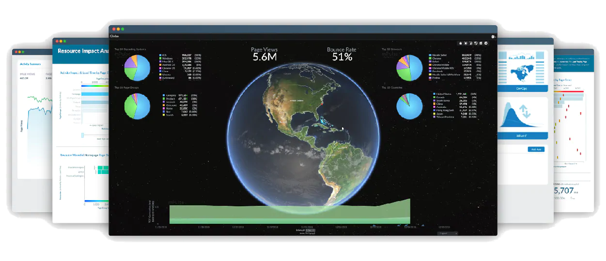
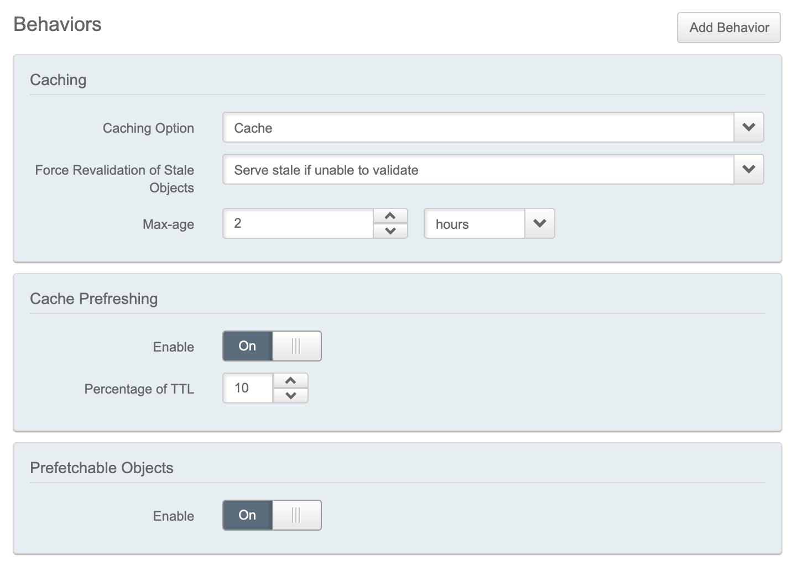
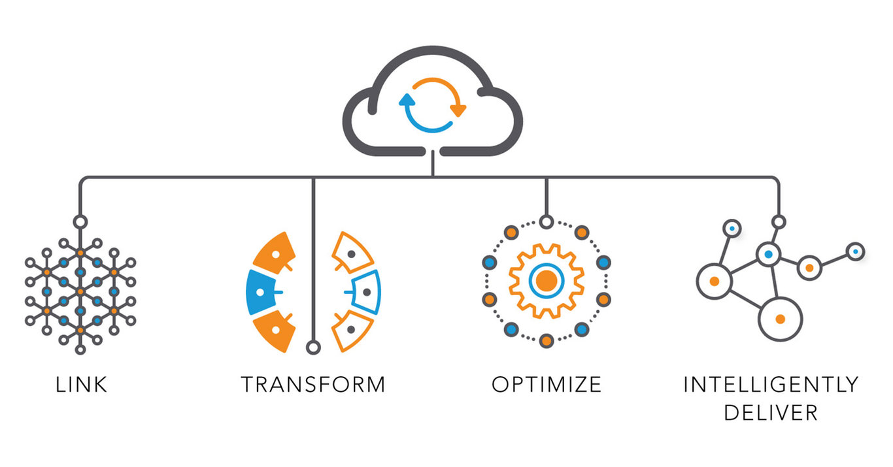
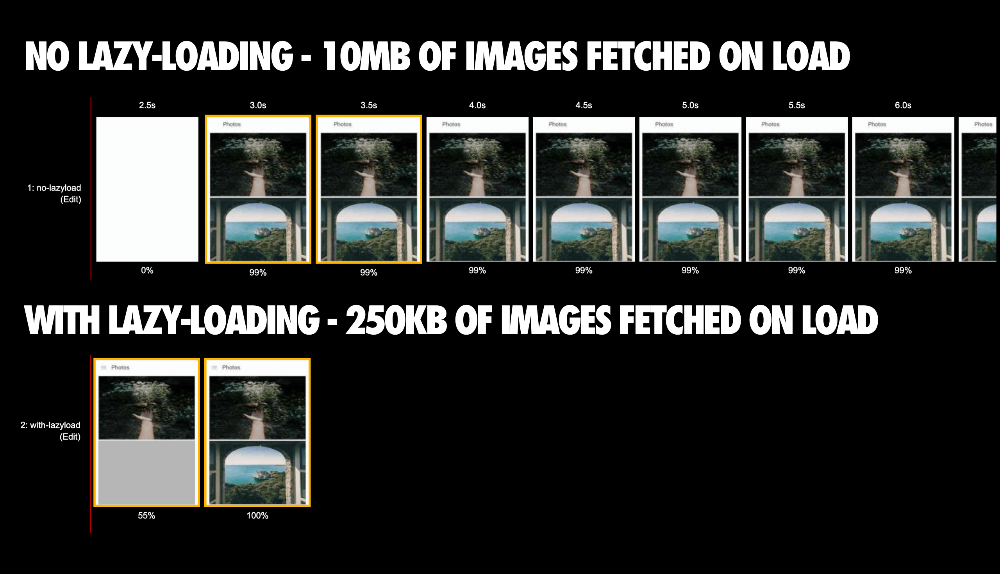
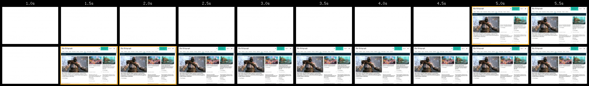

@SimonHearne
Optimise Web Performance to Maximise Digital Revenue
Simon Hearne
Web Performance Solutions Engineer @ Akamai
Coming up...
- Digital Revenue in 2019+
- Defining Site Speed
- IT Levers on Speed
- Maximising Revenue
- What you can do today
Data Source üìä
How do we make money?
- Ad impressions & clicks (circulation)
- Advertorials & sponsored content
- Subscriptions & paywalls
How do we make more money?
- More traffic
- Longer sessions
- Better content
We know that speed matters
| The BBC loses an additional 10% of users for every additional second it takes to load | |
| Pinterest improved load time by 40% and saw 15% increase in SEO traffic and 15% increase in conversions | |
 |
The Financial times increased user engagement by 30% when they released the new, performance focused FT.com |
What do we mean by speed?
POLL 1: What do you measure?
- Page Load
- Paint Timing
- Custom Timer
- Don't know / don't measure
What actually matters?
- Is it working?
- Is it useful?
- Is it interactive?
Is it working?
Is it working?
- Time to First Byte
- First Paint
Is it useful?
Is it useful?
- DOM Content Loaded
- DOM Complete
- First Contentful Paint
- Time to Visually Ready*
*mPulse only
Is it interactive?
Is it interactive?
- Time to Interactive
- First Input Delay
- Time to First Interaction
- Rage Clicks*
*mPulse only
Timer Summary
| Time to First Byte (TTFB) | The speed of the delivery stack |
| DOM Content Loaded (DCL) | The speed of critical dependencies |
| First Paint (FP) | The first time something is rendered |
| First Contentful Paint (FCP) | When the user might first see content |
| Time To Visually Ready (TTVR) | When key content is rendered |
| Page Load Time (PLT) | When the page is complete |
| Time To Interactive (TTI) | When the app is first responsive to input |
| First Input Delay (FID) | How long it takes to respond to input |
Performance Levers üéö
How can we measure engagement?
- Bounce Rate
- Session Length
- Retention Rate*
* rate of visitors who visit another page after this one
POLL 2: How do you measure engagement?
- Bounce Rate
- Session Length
- Subscriptions / Registrations
- Don't know / don't measure
Performance metrics correlate with engagement
Performance metrics correlate with engagement
Goals for maximum engagement
| Timer | Goal Speed |
|---|---|
| First Input Delay (FID) | 200ms |
| Time to First Byte (TTFB) | 500ms |
| First Contentful Paint (FCP) | 1,000ms |
| DOM Ready | 2,500ms |
| Time To Visually Ready (TTVR) | 2,500ms |
| Page Load Time (PLT) | 3,000ms |
| Time To Interactive (TTI) | 4,000ms |
Based on aggregate data - what are yours?
Five tips to improve revenue Ô∏èüíµ
1: Manage third-parties üö∏
JavaScript size correlates with TTI
Third-party scripts are responsible for >70% of publisher requests
1/3rd of third-parties could be redundant
we had a collection of very old scripts and couldn’t track the original requester. We removed those on the premise that, if they were important, people would get back in touch — no one did.
Manage third-parties in the client
A simple header:
Content-Security-Policy: default-src 'self'; report-uri http://mysite.com/csp-reports/JSON violation reports:
{
"csp-report": {
"document-uri": "http://example.org/page.html",
"referrer": "http://evil.example.com/",
"blocked-uri": "http://evil.example.com/evil.js",
"violated-directive": "default-src 'self'",
"original-policy": "default 'self'; report-uri http://mysite.com/csp-reports/"
}
}1: Manage third-parties üö∏
- Remove unnecessary scripts
- Defer non-critical scripts
- Use a Content-Security-Policy
2: Serve critical content ASAP ⚡️
TTFB correlates with TTI
Cache HTML with prefresh
Always serve quickly, with minimum risk of stale content
Font load correlates with TTI
Show text as soon as you can
Preloading fonts cheats the browser!
Show text as soon as you can
Swap in the brand font when it downloads
font-display: [swap|fallback|optional]
2: Serve critical content ASAP ⚡️
- Cache HTML with prefresh
- Show text as soon as you can
3: Optimise image delivery üåÑ
Image count correlates with TTI
Automate image management
Defer below-the-fold images
3: Optimise image delivery üåÑ
- Automate image managemenr
- Defer below-the-fold images
4: Reduce DOM complexity ü߆
DOM complexity correlates with TTI
4: Reduce DOM complexity ü߆
- Render on the server
- Avoid infinite scroll
- Adopt a CSS methodology
5: Reduce or defer JavaScript execution ⚙️
JavaScript size correlates with TTI
Let the browser focus
The single biggest improvement (and easiest to implement technically) came from deferring all JavaScript, including our own.
5: Reduce or defer JavaScript execution
- Only ship necessary JavaScript
- Consider differential serving for low-end devices
- Defer everything?!
Conclusions ✍️
If you're not actively measuring site speed, start now!
Correlate speed with behaviour
Find your sweet spots and set speed goals
Thank you üôè
Q&A
simonhearne.com/presentations/digital-revenue/